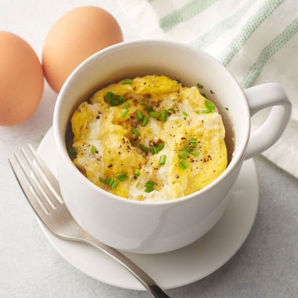

Microwave Mug Omelet
A fluffy omelet made in a mug in about two minutes, with very little cleanup.

Ingredients
- 2 eggs
- 2 tablespoons of milk
- 1/4 cup of shredded cheese
- 2 tablespoons of chopped vegetables, such as spinach or tomato
Equipment
- Microwave-safe mug
- Fork
- Microwave
- Oven mitts
Instructions
- Lightly grease the inside of the mug. Crack the eggs into it and add the milk.
- Beat with a fork until the mixture is smooth and fully mixed.
- Stir in the cheese and vegetables.
- Microwave for 45 seconds. Stir, then microwave for another 30 to 45 seconds until the egg is set and no longer runny.
- Let it cool for a minute. The mug will be hot, so use oven mitts.
Ingredient Notes
Eggs, milk, and cheese are common allergens. Make sure the egg is fully cooked, with no liquid left in the center, before eating.
Make It Your Own
Try ham, bell pepper, or a pinch of black pepper. Serve with toast for dipping.
Team publishing task: test the recipe, add your own photo, and credit any outside recipe inspiration you use.